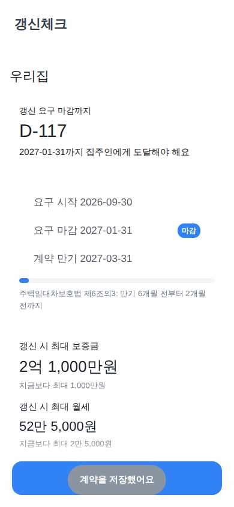

RenewWindow
가상 사용자 3명 중 1명 완주 · 접근성 점검 2화면: 이름 없는 입력칸 1 · 이름 없는 버튼·링크 0 · 같은 이름 중복 0 · 2026-10-05 18:04
완주29세 IT 스타트업 마케터. 첫 월세 계약 만기가 다가와 갱신을 언제까지 요구해야 하는지 급하게 알고 싶다. 스마트폰은 능숙하지만 참을성이 낮다. 안내 문구는 거의 읽지 않고, 두세 번 안에 답이 안 보이면 뒤로가기를 눌러 버리는 습관이 있다. 라이트 모드를 쓴다.
과업 홈에서 계약을 처음 등록한다(계약 이름 '망원동 투룸', 만기일 2027-03-31, 보증금 200000000원, 월세 500000원). 저장 후 넘어간 결과 화면에서 갱신 요구 마감까지 남은 D-day와 갱신 시 최대 보증금·월세를 확인하면 끝이다.

1 "첫 계약 등록하기"(목록 [1]) 탭 → 성공

4 "예: 200,000,000"(목록 [3])에 "200000000" 입력 → 성공

5 "예: 500,000 (전세는 0)"(목록 [4])에 "500000" 입력 → 성공

6 "저장"(목록 [8]) 탭 → 성공

8 최종 화면 — 판정: 완주
성공기준
- ✓ [최종 화면] 기대값 "D-117 · 최대 보증금 2억 1,000만원 · 최대 월세 52만 5,000원"가 (표기 차이는 허용) 화면에 보인다 — 충족: "D-117 / 갱신 시 최대 보증금 2억 1,000만원 / 갱신 시 최대 월세 52만 5,000원"
- ✓ [최종 화면] 결과 화면 첫 줄에 계약 이름 '망원동 투룸'이 보인다 — 충족: "망원동 투룸"
- ✓ [최종 화면] 히어로에 'D-117'이 보인다 — 충족: "D-117"
- ✓ [최종 화면] 타임라인에 '요구 마감 2027-01-31'이 보인다 — 충족: "요구 마감 2027-01-31"
- ✓ [최종 화면] 상한 카드에 '갱신 시 최대 보증금 2억 1,000만원'이 보인다 — 충족: "갱신 시 최대 보증금 2억 1,000만원"
- ✓ [최종 화면] 상한 카드에 '갱신 시 최대 월세 52만 5,000원'이 보인다 — 충족: "갱신 시 최대 월세 52만 5,000원"
심사: 최종 화면(이미지 7)에 계약 이름, D-117, 요구 마감 2027-01-31, 최대 보증금 2억 1,000만원, 최대 월세 52만 5,000원이 모두 표시되어 있다.
7스텝 · 접근성 목록 7스텝 · 목록 번호로 한 동작 6회
미완주66세 은퇴한 전직 공무원. 오래 산 아파트의 집주인이 보증금과 월세를 올리겠다고 해서 법 기준을 넘는지 확인하려 한다. 화면 글자를 천천히 끝까지 읽고, 숫자는 한 자리씩 확인하며 입력한다. 확신이 없으면 같은 화면을 여러 번 다시 확인한다. 큰 글씨를 선호하고 라이트 모드를 쓴다.
과업 계약(이름 '우리집', 만기일 2027-03-31, 보증금 200000000원, 월세 500000원)을 등록한다. 그다음 결과 화면에서 '집주인 인상 통보 점검하기'로 들어간다. '새 금액으로 입력' 탭에서 통보일 2026-12-20, 새 보증금 216000000원, 새 월세 550000원을 넣고 점검한다. 점검 결과 카드에서 상한 초과 여부와 초과 금액을 확인하면 끝이다.

1 "첫 계약 등록하기"(목록 [1]) 탭 → 성공

5 "예: 500,000 (전세는 0)"(목록 [4])에 "500000" 입력 → 성공

7 "집주인 인상 통보 점검하기 통보 금액이 5% 상한을 넘는지 확인해요"(목록 [4]) 탭 → 성공
8 "새 금액으로 입력"(목록 [2]) 탭 → 성공
10 "예: 216,000,000"(목록 [4])에 "216000000" 입력 → 성공
성공기준
- ✓ [최종 화면] 기대값 "상한 초과 · 보증금 8.00% 인상 600만원 초과 · 월세 10.00% 인상 2만 5,000원 초과"가 (표기 차이는 허용) 화면에 보인다 — 충족: "상한 초과 / 보증금 8.00% 인상 · 600만원 초과 / 월세 10.00% 인상 · 2만 5,000원 초과"
- ✓ [최종 화면] 점검 결과 카드에 '상한 초과' 배지가 보인다 — 충족: "상한 초과"
- ✓ [최종 화면] '보증금 8.00% 인상 · 600만원 초과'가 보인다 — 충족: "보증금 8.00% 인상 · 600만원 초과"
- ✓ [최종 화면] '월세 10.00% 인상 · 2만 5,000원 초과'가 보인다 — 충족: "월세 10.00% 인상 · 2만 5,000원 초과"
- ✗ [최종 화면] '집주인 통지 기간 안에 받은 통보예요'가 보인다 — 미충족: "최종 화면에 '집주인 통지 기간 안에 받은 통보예요'는 없다. 보이는 문구는 '집주인에게 증액 통보를 받은 날이에요'(입력 필드 안내)뿐이다."
심사: 최종 화면에 상한 초과 배지와 보증금·월세 초과 내용이 모두 보여 기준 1~4는 충족한다. 통지 기간 안에 받은 통보라는 문구는 화면에 없어 기준 5는 미충족이다. · 미충족 「'집주인 통지 기간 안에 받은 통보예요'가 보인다」 — 화면: "최종 화면에 '집주인 통지 기간 안에 받은 통보예요'는 없다. 보이는 문구는 '집주인에게 증액 통보를 받은 날이에요'(입력 필드 안내)뿐이다."
- 🟡 [visual_bug · 스텝 13] 결과 카드의 '월세 10.00% 인상 · 2만 5,000원 초과' 마지막 줄 '초과'가 하단 고정 '점검하기' 버튼에 가려 잘려 보임
13스텝 · 접근성 목록 13스텝 · 목록 번호로 한 동작 12회
미완주35세 백엔드 개발자. 전세 계약을 월세로 일부 바꾸는 협상을 앞두고 있다. 계산기 앱을 믿지 않아서 빈 값, 0, 범위를 넘는 값을 일부러 넣어 보며 검증한다. 숫자를 직접 다시 계산해 맞춰 보는 성향이고, 늘 다크 모드를 쓴다.
과업 전세 계약(이름 '성수 전세', 만기일 2027-03-31, 보증금 200000000원, 월세 0원)을 등록한다. 결과 화면의 월세 전환 카드에 먼저 '0'을 넣고 계산해 본다. 이어서 기준금리 '수정'에서 '12'를 넣고 저장해 본다. 그다음 기준금리를 3.25로 저장한다. 마지막으로 50000000원을 전환 계산하고, 새로고침한 뒤에도 바뀐 전환율이 남아 있는지 확인하면 끝이다.
1 "첫 계약 등록하기"(목록 [1]) 탭 → 성공

3 "예: 20270331"(목록 [2])에 "2027-03-31" 입력 → 성공

5 "예: 500,000 (전세는 0)"(목록 [4])에 "0" 입력 → 성공

7 "예: 50,000,000"(목록 [1])에 "0" 입력 → 성공
성공기준
- ✓ [여정 중간] 전환 금액 '0'으로 계산하면 '전환할 금액을 입력해주세요' 오류가 보인다 — 충족: "전환할 금액을 입력해주세요"
- ✓ [여정 중간] 기준금리 '12'로 저장하면 '기준금리는 0~10% 사이로 입력해주세요' 오류가 보인다 — 충족: "기준금리는 0~10% 사이로 입력해주세요"
- ✗ [최종 화면] 5,000만원 전환 결과에 '늘어날 수 있는 월세 상한 21만 8,750원'이 보인다 — 미충족: "최종 화면에는 전환 결과가 없습니다. 보이는 문구는 '갱신 시 최대 보증금 2억 1,000만원'과 '계약을 저장했어요'뿐입니다."
- ✗ [새로고침 후] 새로고침 후에도 '적용 전환율 5.25% · 기준금리 3.25%'가 보인다 — 미충족: "최종 화면에는 '적용 전환율 5.25% · 기준금리 3.25%'가 보이지 않습니다. 보이는 문구는 '갱신 요구 마감까지 D-117'과 '계약을 저장했어요'입니다."
심사: 전환 금액 0 계산은 '전환할 금액을 입력해주세요' 오류를, 기준금리 12 저장은 '기준금리는 0~10% 사이로 입력해주세요' 오류를 보여 줘서 1번과 2번은 충족입니다. 새로고침 후 최종 화면에는 월세 상한 결과도, 적용 전환율·기준금리 문구도 없습니다. 5.25%·3.25%는 새로고침 전 중간 화면(이미지 6)에서만 보여서 3번과 4번은 미충족입니다. · 미충족 「5,000만원 전환 결과에 '늘어날 수 있는 월세 상한 21만 8,750원'이 보인다」 — 화면: "최종 화면에는 전환 결과가 없습니다. 보이는 문구는 '갱신 시 최대 보증금 2억 1,000만원'과 '계약을 저장했어요'뿐입니다." · 미충족 「새로고침 후에도 '적용 전환율 5.25% · 기준금리 3.25%'가 보인다」 — 화면: "최종 화면에는 '적용 전환율 5.25% · 기준금리 3.25%'가 보이지 않습니다. 보이는 문구는 '갱신 요구 마감까지 D-117'과 '계약을 저장했어요'입니다."
14스텝 · 접근성 목록 14스텝 · 목록 번호로 한 동작 14회
수정 전29세 IT 스타트업 마케터. 첫 월세 계약 만기가 다가와 갱신을 언제까지 요구해야 하는지 급하게 알고 싶다. 스마트폰은 능숙하지만 참을성이 낮다. 안내 문구는 거의 읽지 않고, 두세 번 안에 답이 안 보이면 뒤로가기를 눌러 버리는 습관이 있다. 라이트 모드를 쓴다.
과업 홈에서 계약을 처음 등록한다(계약 이름 '망원동 투룸', 만기일 2027-03-31, 보증금 200000000원, 월세 500000원). 저장 후 넘어간 결과 화면에서 갱신 요구 마감까지 남은 D-day와 갱신 시 최대 보증금·월세를 확인하면 끝이다.

1 "첫 계약 등록하기"(목록 [1]) 탭 → 성공

2 "예: 망원동 투룸"(목록 [1])에 "망원동 투룸" 입력 → 성공

3 "예: 20270331"(목록 [2])에 "2027-03-31" 입력 → 성공
5 "예: 500,000 (전세는 0)"(목록 [4])에 "500000" 입력 → 성공

7 완주 선언
성공기준
- ✓ [최종 화면] 기대값 "D-117 · 최대 보증금 2억 1,000만원 · 최대 월세 52만 5,000원"가 (표기 차이는 허용) 화면에 보인다 — 충족: "D-117 / 갱신 시 최대 보증금 2억 1,000만원 / 갱신 시 최대 월세 52만 5,000원"
- ✓ [최종 화면] 결과 화면 첫 줄에 계약 이름 '망원동 투룸'이 보인다 — 충족: "망원동 투룸"
- ✓ [최종 화면] 히어로에 'D-117'이 보인다 — 충족: "D-117"
- ✓ [최종 화면] 타임라인에 '요구 마감 2027-01-31'이 보인다 — 충족: "요구 마감 2027-01-31"
- ✓ [최종 화면] 상한 카드에 '갱신 시 최대 보증금 2억 1,000만원'이 보인다 — 충족: "갱신 시 최대 보증금 2억 1,000만원"
- ✓ [최종 화면] 상한 카드에 '갱신 시 최대 월세 52만 5,000원'이 보인다 — 충족: "갱신 시 최대 월세 52만 5,000원"
심사: 최종 화면에 계약 이름 '망원동 투룸', D-117, 요구 마감 2027-01-31, 최대 보증금 2억 1,000만원, 최대 월세 52만 5,000원이 모두 기대값대로 표시된다. 이미지 7만 확인했고 이미지 1~5는 최종 화면 기준 판정에 필요하지 않아 읽지 않았다.
7스텝 · 접근성 목록 7스텝 · 목록 번호로 한 동작 6회
수정 전66세 은퇴한 전직 공무원. 오래 산 아파트의 집주인이 보증금과 월세를 올리겠다고 해서 법 기준을 넘는지 확인하려 한다. 화면 글자를 천천히 끝까지 읽고, 숫자는 한 자리씩 확인하며 입력한다. 확신이 없으면 같은 화면을 여러 번 다시 확인한다. 큰 글씨를 선호하고 라이트 모드를 쓴다.
과업 계약(이름 '우리집', 만기일 2027-03-31, 보증금 200000000원, 월세 500000원)을 등록한다. 그다음 결과 화면에서 '집주인 인상 통보 점검하기'로 들어간다. '새 금액으로 입력' 탭에서 통보일 2026-12-20, 새 보증금 216000000원, 새 월세 550000원을 넣고 점검한다. 점검 결과 카드에서 상한 초과 여부와 초과 금액을 확인하면 끝이다.

1 "첫 계약 등록하기"(목록 [1]) 탭 → 성공

3 "예: 20270331"(목록 [2])에 "2027-03-31" 입력 → 성공

7 "집주인 인상 통보 점검하기 통보 금액이 5% 상한을 넘는지 확인해요"(목록 [4]) 탭 → 성공
성공기준
- ✗ [최종 화면] 기대값 "상한 초과 · 보증금 8.00% 인상 600만원 초과 · 월세 10.00% 인상 2만 5,000원 초과"가 (표기 차이는 허용) 화면에 보인다 — 미충족: "통보일은 오늘 이전 날짜로 입력해주세요"
- ✗ [최종 화면] 점검 결과 카드에 '상한 초과' 배지가 보인다 — 미충족: "통보일은 오늘 이전 날짜로 입력해주세요 (결과 카드와 '상한 초과' 배지는 없고 입력 폼만 보임)"
- ✗ [최종 화면] '보증금 8.00% 인상 · 600만원 초과'가 보인다 — 미충족: "새 보증금(원) 216,000,000 (입력값만 보이고 '8.00% 인상 · 600만원 초과'는 없음)"
- ✗ [최종 화면] '월세 10.00% 인상 · 2만 5,000원 초과'가 보인다 — 미충족: "새 월세(원) 550,000 (입력값만 보이고 '10.00% 인상 · 2만 5,000원 초과'는 없음)"
- ✗ [최종 화면] '집주인 통지 기간 안에 받은 통보예요'가 보인다 — 미충족: "통보일은 오늘 이전 날짜로 입력해주세요 (통지 기간 문구 없음)"
심사: 최종 화면에는 점검 결과 없이 입력 폼만 있고, 통보일 2026-12-20에 대해 '통보일은 오늘 이전 날짜로 입력해주세요' 검증 오류가 떠 있다. 그래서 결과 카드와 배지, 인상률·초과 금액, 통지 기간 문구가 모두 보이지 않는다. · 미충족 「기대값 "상한 초과 · 보증금 8.00% 인상 600만원 초과 · 월세 10.00% 인상 2만 5,000원 초과"가 (표기 차이는 허용) 화면에 보인다」 — 화면: "통보일은 오늘 이전 날짜로 입력해주세요" · 미충족 「점검 결과 카드에 '상한 초과' 배지가 보인다」 — 화면: "통보일은 오늘 이전 날짜로 입력해주세요 (결과 카드와 '상한 초과' 배지는 없고 입력 폼만 보임)" · 미충족 「'보증금 8.00% 인상 · 600만원 초과'가 보인다」 — 화면: "새 보증금(원) 216,000,000 (입력값만 보이고 '8.00% 인상 · 600만원 초과'는 없음)" · 미충족 「'월세 10.00% 인상 · 2만 5,000원 초과'가 보인다」 — 화면: "새 월세(원) 550,000 (입력값만 보이고 '10.00% 인상 · 2만 5,000원 초과'는 없음)" · 미충족 「'집주인 통지 기간 안에 받은 통보예요'가 보인다」
- 🟡 [visual_bug · 스텝 8] 하단 안내문 '통보 받은 내용을 넘으면 5% 상한 초과 여부를…'이 연한 회색에 점검하기 버튼에 가려져 읽기 어렵다
- 🟡 [ui_defect · 글자색이 배경과 구분되지 않거나(안 읽힘) 강조색이 무시돼 전부 같은 회색 · 스텝 8] 하단 '통보 받은 내용을 넘으면 5% 상한 초과 여부를' 문구가 배경과 거의 구분되지 않음
- 🔴 [dead_end · 스텝 13] 통보일 2026-12-20을 넣고 '점검하기'를 누르면 '통보일은 오늘 이전 날짜로 입력해주세요'라는 오류가 나서 결과 카드로 넘어가지 못한다. 앞으로 올 통보일은 입력할 수 없고, 왜 안 되는지 안내하는 문구도 없다.
13스텝 · 접근성 목록 13스텝 · 목록 번호로 한 동작 12회
수정 전35세 백엔드 개발자. 전세 계약을 월세로 일부 바꾸는 협상을 앞두고 있다. 계산기 앱을 믿지 않아서 빈 값, 0, 범위를 넘는 값을 일부러 넣어 보며 검증한다. 숫자를 직접 다시 계산해 맞춰 보는 성향이고, 늘 다크 모드를 쓴다.
과업 전세 계약(이름 '성수 전세', 만기일 2027-03-31, 보증금 200000000원, 월세 0원)을 등록한다. 결과 화면의 월세 전환 카드에 먼저 '0'을 넣고 계산해 본다. 이어서 기준금리 '수정'에서 '12'를 넣고 저장해 본다. 그다음 기준금리를 3.25로 저장한다. 마지막으로 50000000원을 전환 계산하고, 새로고침한 뒤에도 바뀐 전환율이 남아 있는지 확인하면 끝이다.

1 "첫 계약 등록하기"(목록 [1]) 탭 → 성공

7 아래로 스크롤 → 성공

15 최종 화면 — 판정: 미완주
성공기준
- ✓ [여정 중간] 전환 금액 '0'으로 계산하면 '전환할 금액을 입력해주세요' 오류가 보인다 — 충족: "전환할 금액을 입력해주세요"
- ✓ [여정 중간] 기준금리 '12'로 저장하면 '기준금리는 0~10% 사이로 입력해주세요' 오류가 보인다 — 충족: "기준금리는 0~10% 사이로 입력해주세요"
- ✗ [최종 화면] 5,000만원 전환 결과에 '늘어날 수 있는 월세 상한 21만 8,750원'이 보인다 — 미충족: "성수 전세 / D-117 / 갱신 시 최대 보증금 2억 1,000만원 / 계약을 저장했어요 (5,000만원 전환 결과와 월세 상한 문구는 화면에 없음)"
- ✗ [새로고침 후] 새로고침 후에도 '적용 전환율 5.25% · 기준금리 3.25%'가 보인다 — 미충족: "성수 전세 / D-117 / 갱신 시 최대 보증금 2억 1,000만원 (적용 전환율·기준금리 문구는 화면에 없음)"
심사: 전환 금액 0 오류와 기준금리 12 오류 문구는 중간 화면에 보인다. 최종 화면에는 5,000만원 전환 결과도 '적용 전환율 5.25% · 기준금리 3.25%'도 없다. 계약 정보와 '계약을 저장했어요' 토스트만 보이고 전환율 영역은 화면 밖이다. · 미충족 「5,000만원 전환 결과에 '늘어날 수 있는 월세 상한 21만 8,750원'이 보인다」 — 화면: "성수 전세 / D-117 / 갱신 시 최대 보증금 2억 1,000만원 / 계약을 저장했어요 (5,000만원 전환 결과와 월세 상한 문구는 화면에 없음)" · 미충족 「새로고침 후에도 '적용 전환율 5.25% · 기준금리 3.25%'가 보인다」 — 화면: "성수 전세 / D-117 / 갱신 시 최대 보증금 2억 1,000만원 (적용 전환율·기준금리 문구는 화면에 없음)"
14스텝 · 접근성 목록 14스텝 · 목록 번호로 한 동작 13회
접근성 점검(화면별 · 결정론 · 완주 판정과 무관)
- / — 이름 없는 입력칸 0 · 이름 없는 버튼·링크 0 · 같은 이름 중복 0
- /contracts/new — 이름 없는 입력칸 1 · 이름 없는 버튼·링크 0 · 같은 이름 중복 0
접근성 트리 기준이다 — placeholder로만 이름이 붙은 칸은 여기서 '이름 있음'으로 센다(라벨이 사라지는 문제는 TDS 린트가 따로 본다).
각 화면은 가상 사용자가 그 다음 동작을 정하기 직전에 본 것이다. 캡션은 그 화면에서 실제로 한 동작이다. 마지막 장이 성공/실패 판정의 근거다. 화면을 누르면 원본 크기로 열린다.
브라우저에서 돌린 결과라 토스 SDK(로그인·결제·햅틱)는 비활성이다 — UI와 흐름만 판단 대상이다.